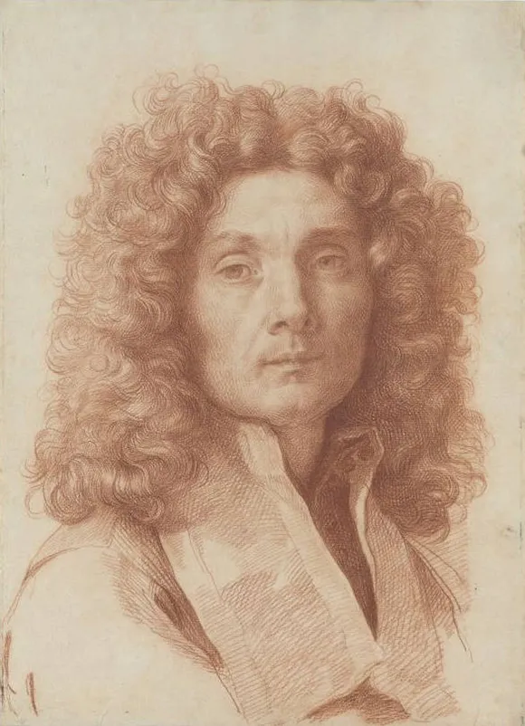
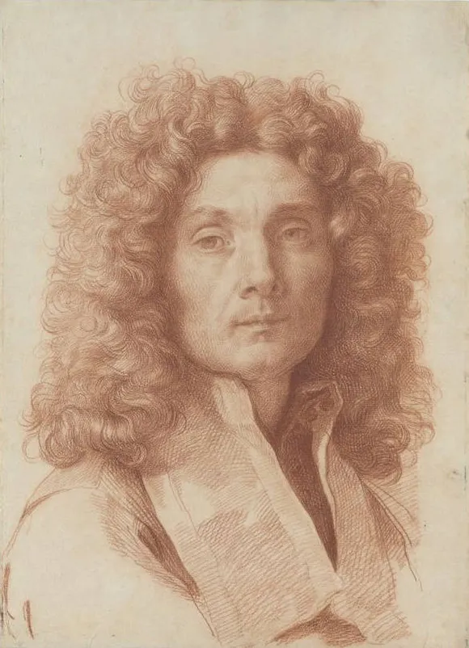
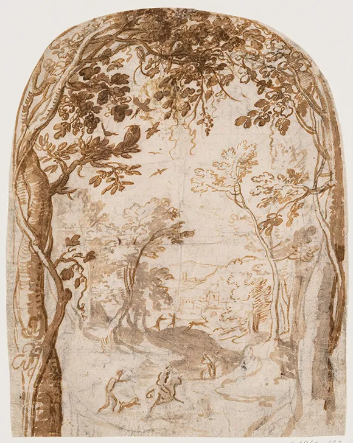
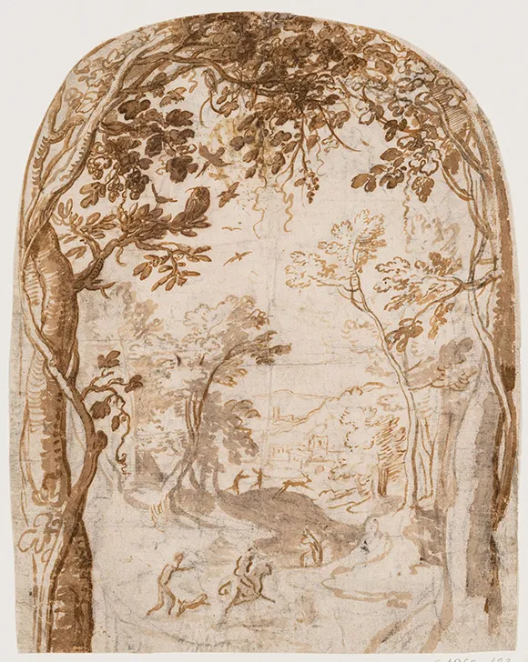
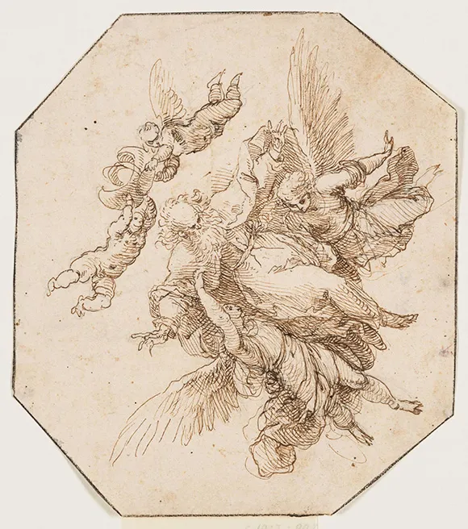
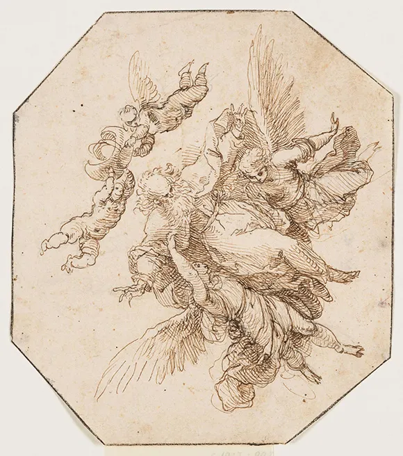

Per una fruizione ottimale visita il sito su desktop conoscereildisegno.it
Una ricerca storico-artistica studia un gruppo di disegni italiani a
Dresda e mostra il metodo di studio del disegno basato sulle scuole
pittoriche e sul confronto tra opere d'arte.

 
 



 
